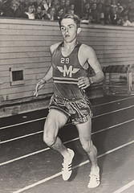
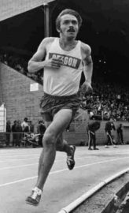
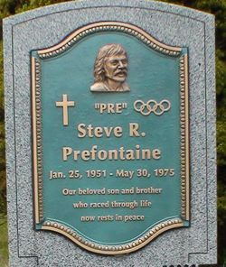

About Steve
Steve Prefontaine was born on January 25, 1951 in Coos Bay, Oregon. He started running at Marshfield High School under Coach Walter Clure. Pre broke the American record for 2 miles as a senior with a time of 8:41.5.
Coach McClure convinced Steve to sign with Oregon State where he trained under Bill Bowerman, co-founder of Nike. While at Oregon, Pre held eight collegiate records for with his three-mile and six-mile time still standing
Steve competed in the 1976 Summer Olympics in Montreal and set American records in every race from 2,000 to 10,000 meters. On May 30, 1975, Steve was tragically killed in a car accident while driving his friend, Frank Shorter, home. Steve's memory lives on.
Personal Records
| Distance | Time | Date | Location |
|---|---|---|---|
| 1,500 meters | 3:38 | June 28, 1973 | Helsinki, Finland |
| 2,000 meters | 5:01.4 | May 9, 1975 | Coos Bay, Oregon |
| 3,000 meters | 7:42.6 | July 2, 1974 | Milan, Italy |
| 5,000 meters | 13:21:87 | June 26, 1974 | Helsinki, Finland |
| 10,000 meters | 27:43.6 | April 27, 1974 | Eugene, Oregon |
| 1 mile | 3:54.6 | June 20, 1973 | Eugene, Oregon |
| 2 miles | 8:18.29 | July 18, 1974 | |
| 2 miles | 8:18.29 | July 18, 1974 | |
| 3 miles | 12:51.4 | June 8, 1974 | Eugene, Oregon |
| 6 miles | 26:51.8 | April 27, 1974 | |
| 5000 meters (H.S.) | 13:52.8 | 1969 |